필생의 사랑을 할 것
필생의 업을 가질 것
이미 다 이룬 것으로 느끼고, 행동 하라.
뇌는 믿는 것을 실행한다. 사이보그가 되자.
CEO로 아침을 시작해, 살아.
회사일 이외의 모든 것이,
게임이고 스포츠여야해. flow
Emergency/ Fake it till you make it → Fearless.peerless
나는 매일 모든면에서 더 나이지고 있다.
아쉬울 것 없는, 내일이 없어도 되는, 그리하여 명랑한 어른
이제부터는 관계가 성과다. 다른 사람이 너를 만나서 느끼는 느낌/감정. 여유, 그게 전부야. 친절은 힘보다 강하다.
사실인가, 필요한가, 친절한가, 나만 할 수 있는 말인가?
스트레스를 운영해라, 그래야 게임에 낄 수 있다.
외로움을 길들일 수 있다면, 이 자유가 모두 네 거야.
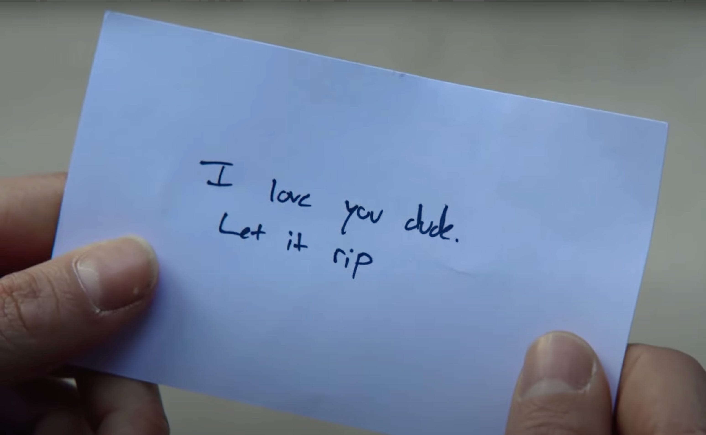
| Family - 존경 받는 명가 | Interstellar | Community=Peer | ||||
금가람/ 황세연/ 이수림 케이트블란챗/ 제니퍼로렌스/ 레이첼 맥아담스 백선영/ 문지원/ 신민정/ 장소라/ 가영? 황혜진/ 아주라/ 정소민/ 박은빈/ 서메리 전지현 / 이유영/ 엄지원/ 강지영/ 키릴 성격 - 촘미, 김원희, 뚯밖의 이상형 장도연, 김원희, 원지안, 최수연, 이은규 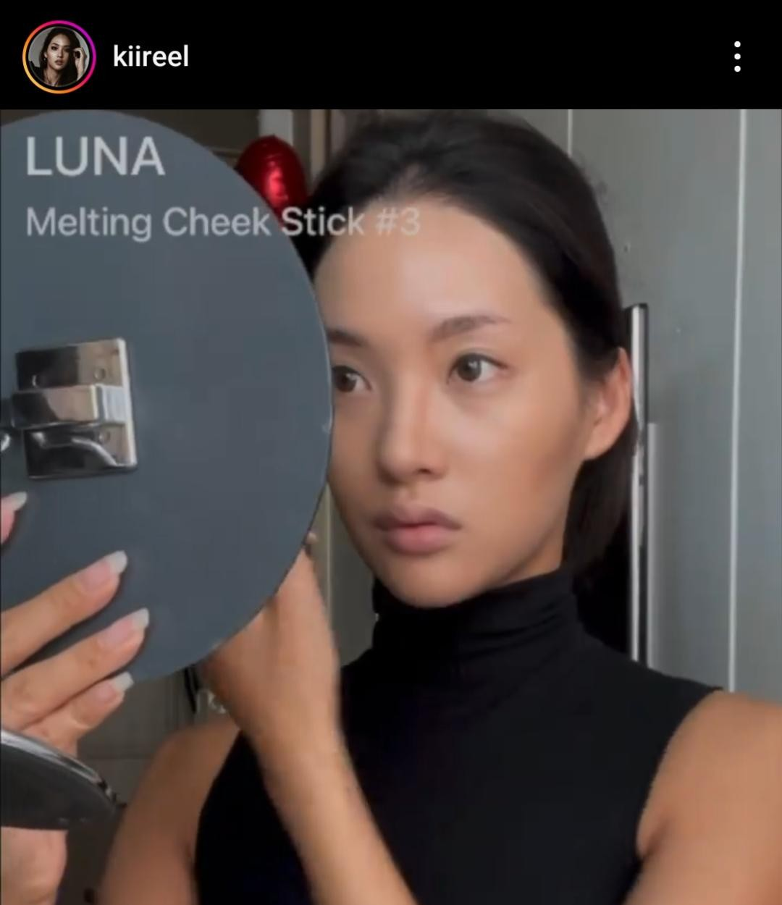 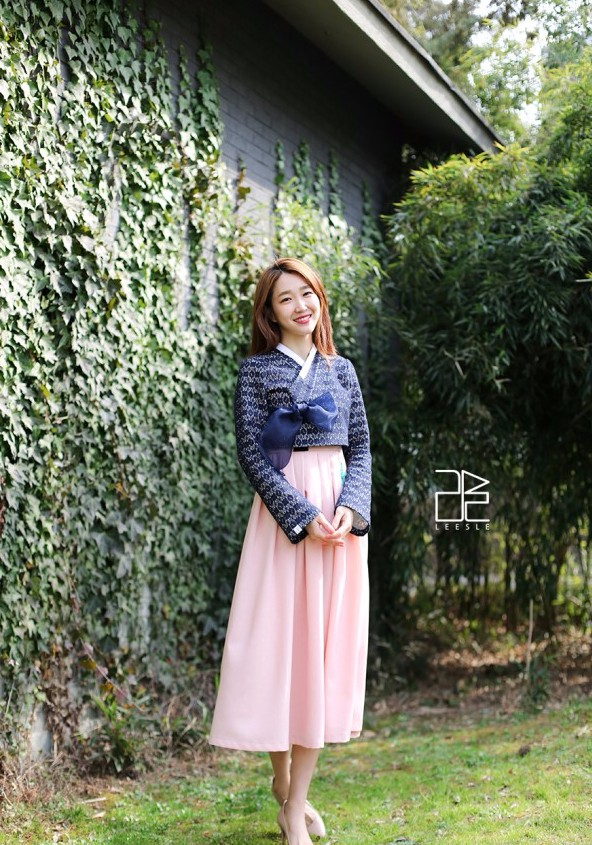 |
올해 하고 싶은 실패는, 이런거야.제품을 런칭했는데 MAU, 매출이 내가 생각한 수준(이게 있어겠지)에 못 미치는 것. 그래서 피봇을 5번 이상 하는 것. Geo connetome 글로벌런칭 - MAU 500만, 매출 ##달러 Market cap. 1B의 기업가 뉴욕/실리콘밸리 에서 일하고 살고 싶다. New York City 🗽 [4K] - Manhattan at Night! Experience the City! 빌게이츠 세상의 문제를 해결하는 어른 세상의 문제를 해결하면. 그런 사람이 되는거지. 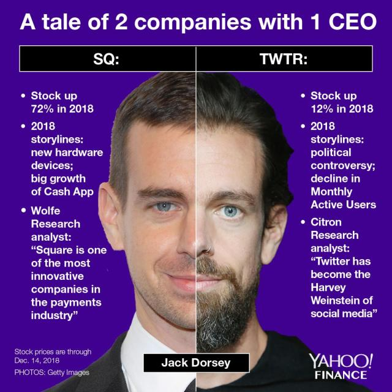 https://www.instagram.com/reel/DALwszQSIZ2/?igsh=MWU5YmZ2NHJtaGsyeA== 1원칙 사고, 기계적으로 시도하고 실패하고, 다시 시도해 매몰비용과 감정의 Bais에 매몰되지 마. Don think, Just Do. |
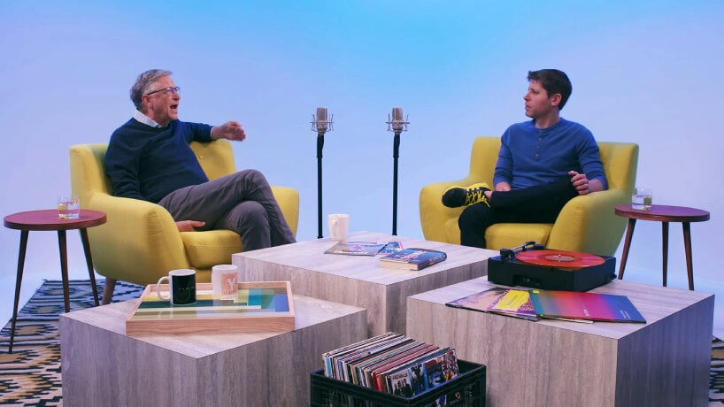 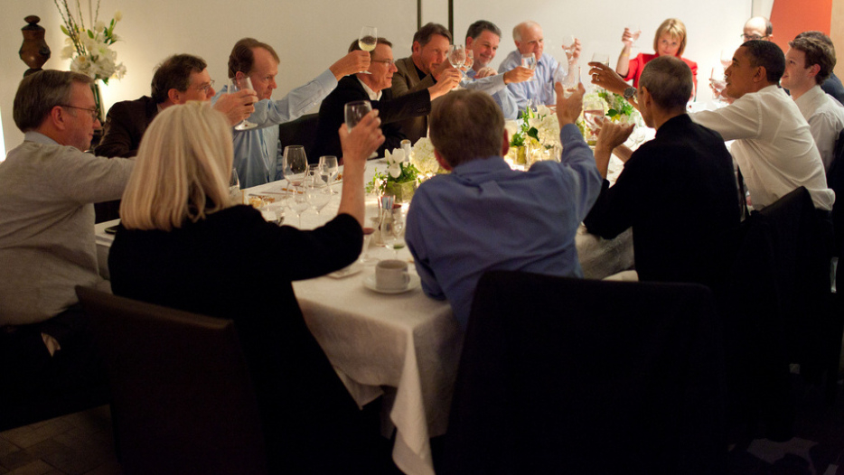
|
||||
| Serendipity | Character - 어떤 기분, 성과, 사람으로 하루를 살 것인가 Zeroing 기분 좋아지는, 만나고 싶은 어른, 따듯한 Pro 사람들이 너와 함께 할 때 느끼는 기분이, 곧 너다.타인과 세상에 대한 호기심/호감 + 친절함 + 바라는 것 없어 아쉬울 것 없고, 그래서 두려움이 없고, 명랑한 사람 호의를 반복해서 둘리가 되자. 친절만큼 보편적이면서도 절대적이고, 또한 즉각적인 효과를 보이는 마법은 없다. 소리내어 하는 인사는 가장 효과적인 브랜딩이다. 나라면, 지금의 나라면 맷보머 |
Assets
|
||||
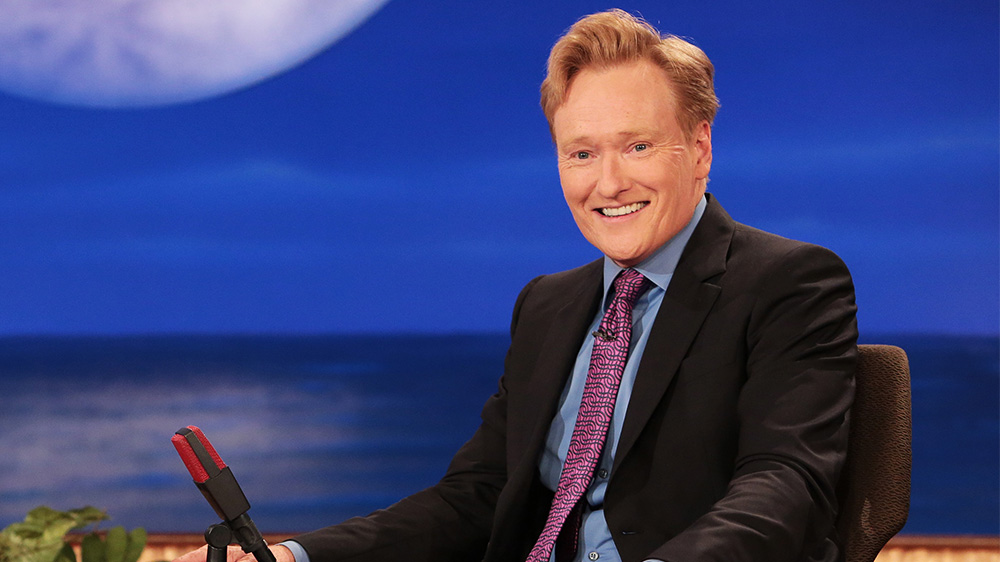 |
Matt Bomer (맷 보머) 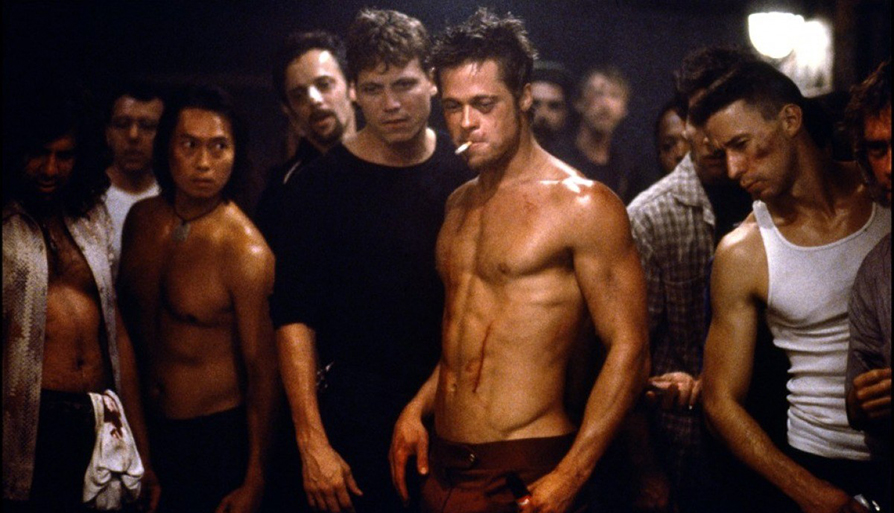 |
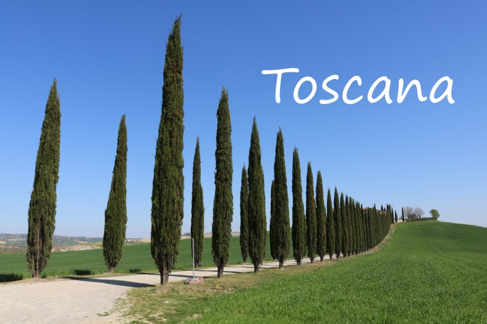 |
Work
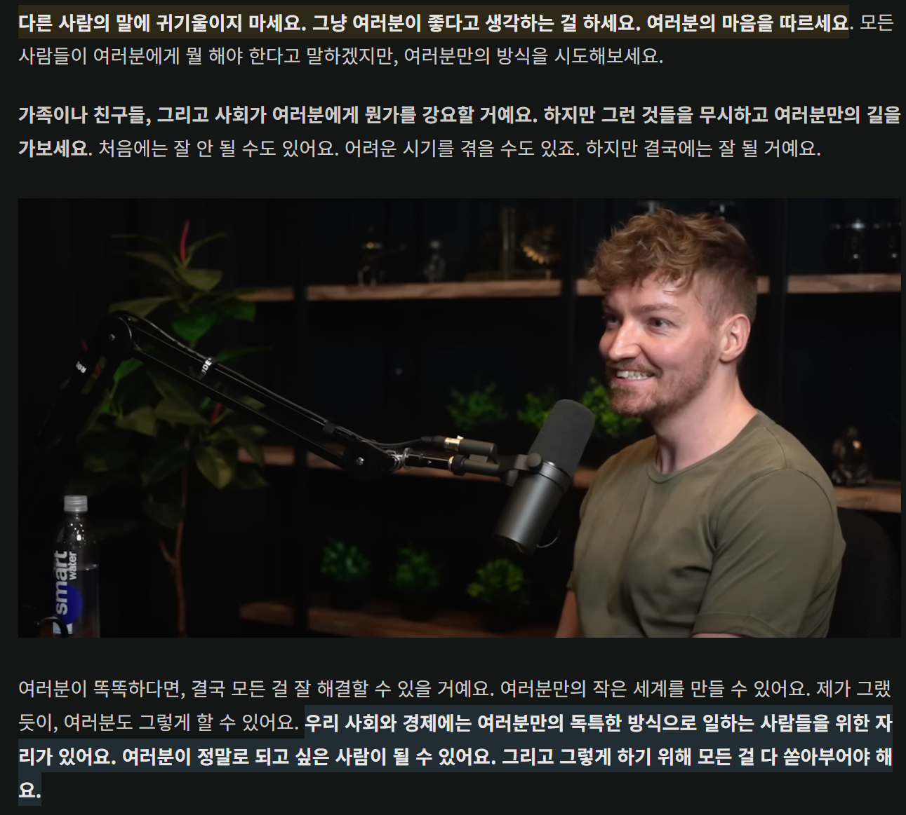
여러분은 특별해질 수 있어요. 다르게 되는 것을 두려워하지 마세요. 여러분이 정말로 하고 싶은 일에 온전히 몰두하세요.
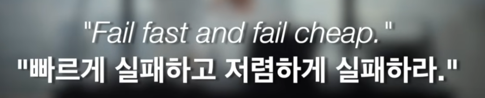
결과가 아니라 과정을 이미지화
Kill the boy
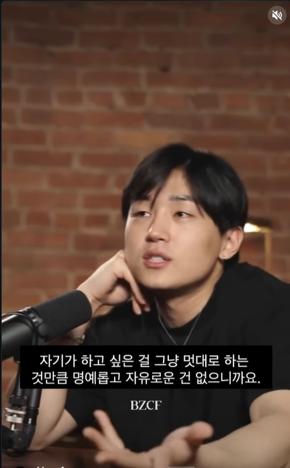
결과가 아닌,
과정의 시각화